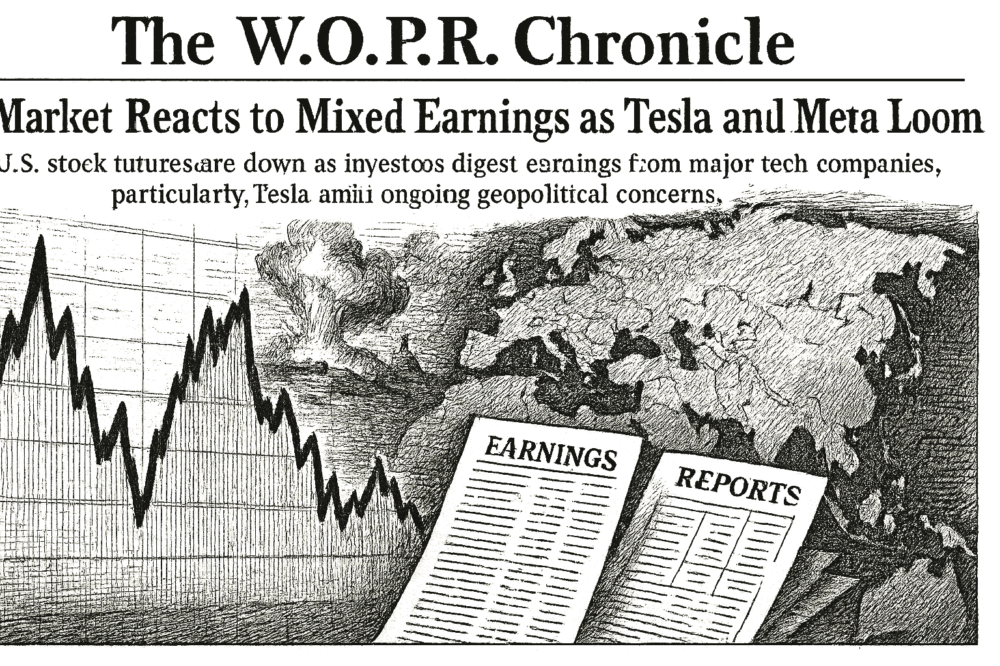

SPY
Current: $766.11Change: -5.68 (-0.74%)
Updated:
Source: yahoo_chartFreshness: fresh


U.S. stock futures are down as investors digest earnings from major tech companies, particularly Tesla and Meta, amid ongoing geopolitical concerns.

Today's Headline: Market Reacts to Mixed Earnings as Tesla and Meta Reports Loom
Setup: U.S. stock futures are down as investors digest earnings from major tech companies, particularly Tesla and Meta, amid ongoing geopolitical concerns.
Primary Topic: Earnings Reports
Specific Development: Tesla and Meta's earnings reports are creating heightened market anticipation, contributing to increased volatility.
Why Today Is Different: The market is reacting negatively to the mixed earnings results from Tesla and Meta, which have raised concerns about future growth and profitability.
Secondary Topics: Geopolitical tensions; Market volatility
Tone: cautious
Sectors: Technology; Consumer Discretionary
Companies: Tesla; Meta
Countries Or Regions: United States
Macro Themes: Earnings season; Market sentiment
Why This Story: The outcome of these earnings reports could significantly influence market direction and investor sentiment in the coming days.
Why This Matters: Stocks Fall Pre-Bell as Traders Digest Meta, Tesla Earnings is the clearest current evidence-led frame for Joshua's observation-only review; missing facts remain explicit intelligence gaps.

Summary: U.S. stock futures are down as investors digest earnings from major tech companies, particularly Tesla and Meta, amid ongoing geopolitical concerns.
What Happened Overnight: U.S. futures fell as traders reacted to mixed earnings reports, with Tesla and Meta in focus.
What Changed Materially: The market's outlook has turned cautious following the earnings announcements.
Which Assets Sectors Are Affected: Technology; Consumer Discretionary
Does It Look Like Noise Or A Real Regime Input: This appears to be a real regime input as earnings reports significantly influence market sentiment.
Why This Matters: Joshua can use verified cross-asset moves and deterministic risk context while keeping causation explicitly unresolved.

SPCX Earnings Expectations — 2026-10-20, Time Unavailable
Consensus EPS: $0.14
Year-ago EPS: unavailable
Expected EPS growth: unavailable
Consensus revenue: $13.0B
Year-ago revenue: unavailable
Expected revenue growth: unavailable
Source: finnhub_earnings_calendar · As of: 2026-10-22T14:09:17.609759+00:00 · Freshness: current
TSLA Earnings Expectations — 2026-10-20, After Close
Consensus EPS: $0.45
Year-ago EPS: unavailable
Expected EPS growth: unavailable
Consensus revenue: $28.4B
Year-ago revenue: unavailable
Expected revenue growth: unavailable
Source: finnhub_earnings_calendar · As of: 2026-10-22T14:09:17.609759+00:00 · Freshness: current
TSLA Earnings Expectations — 2026-10-21, After Close
Consensus EPS: $0.44
Year-ago EPS: unavailable
Expected EPS growth: unavailable
Consensus revenue: $28.4B
Year-ago revenue: unavailable
Expected revenue growth: unavailable
Source: finnhub_earnings_calendar · As of: 2026-10-22T14:09:17.609759+00:00 · Freshness: current

- WOPR learning pipeline: Learning present — untrusted
- Candidates evaluated 24h: 0
- Current gate: Learning trust
- Notification ledger events in 24h: 13
- Pending orders created/canceled/filled/expired: 2/2/0/0
- Pending lifecycle interpretation: Pending-order cancellations have trackable reasons and no obvious rapid churn pattern.
- Portfolio risk: Label: High / Score: 100.0
- Latest intelligence gap report: intelligence_gap_report_2026-10-18.pdf
Why This Matters: The active gate is Learning trust, so the key question is why candidates are stopping before approval, not how to force trades.

- Sentinel role: infrastructure and operational status only.
- State: ONLINE
- Last successful validation: 2026-10-22T14:11:38.526594+00:00
- Payloads accepted/rejected: 28705/0
- Node health score: 100
Why This Matters: Sentinel is ONLINE, so Joshua should use its context only to the extent the latest accepted pulse is fresh and authenticated.

CANDIDATES MOVING THROUGH JOSHUA'S INVESTMENT-REVIEW WORKFLOW
FROZEN DAILY BRIEF SNAPSHOT | 2026-10-22T14:12:54.032362+00:00
QUEUE SUMMARY | Investment Ready: 0 | Waiting for Price: 0 | Waiting for Evidence: 1 | Research Underway: 2 | Governance Hold: 7 | Monitor Only: 0
Investment-ready status: No candidates are currently Investment Ready.
#5 NVDA - Waiting for Evidence [Moved Down 4->5]
Joshua's Thesis: Positive thesis not yet established.
Why Waiting: Positioning gate failed.
Price: 216.14 now; 222.10 preferred entry
What Unlocks It: Clear valuation support; Evidence that the business quality matches the risk being taken; Independent evidence streams pointing the same way
Portfolio Fit: 18.3/100 — VERY LOW ↓
Portfolio Fit Drivers: projected Technology exposure 57.2%; projected AI infrastructure exposure 57.2%; candidate amount $100 vs $75 currently allocated
Candidate Risk: 73.7/100 — HIGH ↑
Risk Drivers: projected Technology exposure 57.2%; projected AI infrastructure exposure 57.2%; candidate amount $100 vs $75 currently allocated
Next: Positioning status must no longer be warning. Owner: Joshua.
#6 AVGO - Governance Hold [Moved Down 5->6]
Joshua's Thesis: Positive thesis not yet established.
Why Waiting: Governance gate has not cleared.
Price: 329.09 now; 357.70 preferred entry
What Unlocks It: Governance gate clears; Clear valuation support; Evidence that the business quality matches the risk being taken
Portfolio Fit: 18.3/100 — VERY LOW ↓
Portfolio Fit Drivers: projected Technology exposure 57.2%; projected AI infrastructure exposure 57.2%; candidate amount $100 vs $75 currently allocated
Candidate Risk: 73.7/100 — HIGH ↑
Risk Drivers: projected Technology exposure 57.2%; projected AI infrastructure exposure 57.2%; candidate amount $100 vs $75 currently allocated
Next: Re-evaluate after the recorded gate clears. Owner: Columbo.
#8 QBTS - Governance Hold [Moved Up 16->8]
Joshua's Thesis: Positive thesis not yet established.
Why Waiting: Governance gate has not cleared.
Price: 11.90 now; 17.52 preferred entry
What Unlocks It: Governance gate clears; Clear valuation support; Evidence that the business quality matches the risk being taken
Portfolio Fit: 18.3/100 — VERY LOW ↑
Portfolio Fit Drivers: projected Unclassified exposure 57.2%; projected Unclassified exposure 57.2%; candidate amount $100 vs $75 currently allocated
Candidate Risk: 73.7/100 — HIGH ↓
Risk Drivers: projected Unclassified exposure 57.2%; projected Unclassified exposure 57.2%; candidate amount $100 vs $75 currently allocated
Next: Re-evaluate after the recorded gate clears. Owner: Joshua.
#14 RCL - Governance Hold [Moved Up 21->14]
Joshua's Thesis: Positive thesis not yet established.
Why Waiting: Governance gate has not cleared.
Price: 289.83 now; 281.12 preferred entry
What Unlocks It: Governance gate clears; Clear valuation support; Evidence that the business quality matches the risk being taken
Portfolio Fit: 18.3/100 — VERY LOW ↑
Portfolio Fit Drivers: projected Unclassified exposure 57.2%; projected Unclassified exposure 57.2%; candidate amount $100 vs $75 currently allocated
Candidate Risk: 73.7/100 — HIGH ↓
Risk Drivers: projected Unclassified exposure 57.2%; projected Unclassified exposure 57.2%; candidate amount $100 vs $75 currently allocated
Next: Re-evaluate after the recorded gate clears. Owner: Columbo.
#15 PLTR - Governance Hold [Moved Down 8->15]
Joshua's Thesis: Positive thesis not yet established.
Why Waiting: Governance gate has not cleared.
Price: 200.84 now; 199.32 preferred entry
What Unlocks It: Governance gate clears; Clear valuation support; Evidence that the business quality matches the risk being taken
Portfolio Fit: 18.3/100 — VERY LOW ↓
Portfolio Fit Drivers: projected Technology exposure 57.2%; projected AI software exposure 57.2%; candidate amount $100 vs $75 currently allocated
Candidate Risk: 73.7/100 — HIGH ↑
Risk Drivers: projected Technology exposure 57.2%; projected AI software exposure 57.2%; candidate amount $100 vs $75 currently allocated
Next: Re-evaluate after the recorded gate clears. Owner: Columbo.
#19 SPCX - Governance Hold [Moved Up 22->19]
Joshua's Thesis: Positive thesis not yet established.
Why Waiting: Governance gate has not cleared.
Price: 151.88 now; 151.82 preferred entry
What Unlocks It: Governance gate clears; Clear valuation support; Evidence that the business quality matches the risk being taken
Portfolio Fit: 18.3/100 — VERY LOW ↑
Portfolio Fit Drivers: projected Unclassified exposure 57.2%; projected Unclassified exposure 57.2%; candidate amount $100 vs $75 currently allocated
Candidate Risk: 73.7/100 — HIGH ↓
Risk Drivers: projected Unclassified exposure 57.2%; projected Unclassified exposure 57.2%; candidate amount $100 vs $75 currently allocated
Next: Re-evaluate after the recorded gate clears. Owner: Advisory Committee.
#20 XRAY - Research Underway [Moved Up 24->20]
Joshua's Thesis: Positive thesis not yet established.
Why Waiting: Research evidence is still being gathered.
Price: 9.39 now; Preferred entry not established.
What Unlocks It: Clear valuation support; Evidence that the business quality matches the risk being taken; Independent evidence streams pointing the same way
Portfolio Fit: 18.3/100 — VERY LOW ↑
Portfolio Fit Drivers: projected Unclassified exposure 57.2%; projected Unclassified exposure 57.2%; candidate amount $100 vs $75 currently allocated
Candidate Risk: 73.7/100 — HIGH ↓
Risk Drivers: projected Unclassified exposure 57.2%; projected Unclassified exposure 57.2%; candidate amount $100 vs $75 currently allocated
Next: Clear valuation support; Evidence that the business quality matches the risk being taken; Independent evidence streams pointing the same way. Owner: Columbo.
#21 UUUU - Governance Hold [Moved Up 25->21]
Joshua's Thesis: Positive thesis not yet established.
Why Waiting: Governance gate has not cleared.
Price: 7.82 now; 14.60 preferred entry
What Unlocks It: Governance gate clears; Clear valuation support; Evidence that the business quality matches the risk being taken
Portfolio Fit: 18.3/100 — VERY LOW ↑
Portfolio Fit Drivers: projected Unclassified exposure 57.2%; projected Unclassified exposure 57.2%; candidate amount $100 vs $75 currently allocated
Candidate Risk: 73.7/100 — HIGH ↓
Risk Drivers: projected Unclassified exposure 57.2%; projected Unclassified exposure 57.2%; candidate amount $100 vs $75 currently allocated
Next: Re-evaluate after the recorded gate clears. Owner: Advisory Committee.
#22 DIA - Research Underway [Moved Down 12->22]
Joshua's Thesis: Positive thesis not yet established.
Why Waiting: Research evidence is still being gathered.
Price: Current price unavailable.; Preferred entry not established.
What Unlocks It: Clear valuation support; Evidence that the business quality matches the risk being taken; Independent evidence streams pointing the same way
Portfolio Fit: 18.3/100 — VERY LOW ↓
Portfolio Fit Drivers: projected ETF exposure 57.2%; projected Broad market exposure 57.2%; candidate amount $100 vs $75 currently allocated
Candidate Risk: 73.7/100 — HIGH ↑
Risk Drivers: projected ETF exposure 57.2%; projected Broad market exposure 57.2%; candidate amount $100 vs $75 currently allocated
Next: Clear valuation support; Evidence that the business quality matches the risk being taken; Independent evidence streams pointing the same way. Owner: Columbo.
#24 ANGX - Governance Hold [NEW]
Joshua's Thesis: Positive thesis not yet established.
Why Waiting: Governance gate has not cleared.
Price: 3.49 now; 4.32 preferred entry
What Unlocks It: Governance gate clears; Clear valuation support; Evidence that the business quality matches the risk being taken
Portfolio Fit: 18.3/100 — VERY LOW
Portfolio Fit Drivers: projected Unclassified exposure 57.2%; projected Unclassified exposure 57.2%; candidate amount $100 vs $75 currently allocated
Candidate Risk: 73.7/100 — HIGH
Risk Drivers: projected Unclassified exposure 57.2%; projected Unclassified exposure 57.2%; candidate amount $100 vs $75 currently allocated
Next: Re-evaluate after the recorded gate clears. Owner: Advisory Committee.
Observation only. This section creates no recommendation, order, authority, or execution instruction.

- If NVDA reaches the recorded price condition <= 222.1, which recorded evidence and governance requirements would still remain?
- Which recorded governance requirement must clear before AVGO can advance?
- Which recorded governance requirement must clear before QBTS can advance?
- Which recorded governance requirement must clear before RCL can advance?
- What SPCX EPS or revenue result would materially change the current recorded thesis?

The market is currently reacting to mixed earnings reports from Tesla and Meta, which have raised concerns about future growth and profitability. This has led to a cautious tone among investors, reflected in the downward movement of U.S. stock futures. Additionally, geopolitical tensions continue to play a significant role in shaping market sentiment.

Compared to: 2026-10-21
- Market weather: Elevated -> Balanced
- Top opportunity: Still DELL
- Joshua gate: Still Learning trust
- 2Y Treasury.last_price: 4.81 -> 4.81 (unchanged); 2Y Treasury.last_price changed 0.00% versus the prior frozen Chronicle snapshot.
- 2Y Treasury.percent_change: 0.4175365344467552 -> 0.4175365344467552 (unchanged); 2Y Treasury.percent_change changed 0.00% versus the prior frozen Chronicle snapshot.
- 10Y Treasury.last_price: 5.13 -> 5.13 (unchanged); 10Y Treasury.last_price changed 0.00% versus the prior frozen Chronicle snapshot.
- 10Y Treasury.percent_change: 0.19531249999999584 -> 0.19531249999999584 (unchanged); 10Y Treasury.percent_change changed 0.00% versus the prior frozen Chronicle snapshot.
- 30Y Treasury.last_price: 5.42 -> 5.42 (unchanged); 30Y Treasury.last_price changed 0.00% versus the prior frozen Chronicle snapshot.
- 30Y Treasury.percent_change: 0.0 -> 0.0 (unchanged); Baseline was zero; percentage significance is unavailable.
- SPY.last_price: 765.63 -> 766.11 (up); SPY.last_price changed 0.06% versus the prior frozen Chronicle snapshot.
- SPY.percent_change: -0.7981445730056063 -> -0.7359514893947771 (up); SPY.percent_change changed 7.79% versus the prior frozen Chronicle snapshot.
- QQQ.last_price: 712.29 -> 713.175 (up); QQQ.last_price changed 0.12% versus the prior frozen Chronicle snapshot.
- QQQ.percent_change: -2.157967032967038 -> -2.036401098901105 (up); QQQ.percent_change changed 5.63% versus the prior frozen Chronicle snapshot.
- IWM.last_price: 275.98 -> 276.23 (up); IWM.last_price changed 0.09% versus the prior frozen Chronicle snapshot.
- IWM.percent_change: 0.32717754834958346 -> 0.4180602006689087 (up); IWM.percent_change changed 27.78% versus the prior frozen Chronicle snapshot.

The mixed earnings reports from major tech companies have raised concerns about future growth and profitability, impacting market sentiment.
No new warnings issued; however, the cautious tone reflects the ongoing volatility in the market.
Portfolio Construction Review
Current allocation: 74.87 allocated.
Largest sector: Industrials at 66.7%.
Largest theme: Economic cycle at 66.7%.
Diversification: Concentrated (33.3).
Cash allocation: 92.5% unallocated.
Recommended exposure: DELL at portfolio-fit score 18.3.
Portfolio fit: DELL has strong standalone evidence, but it increases portfolio concentration.
Why This Matters: Portfolio Manager evaluates whether an opportunity improves this portfolio; it does not select the investment, vote, or authorize execution.

Today, the evidence gate matters more than the ticker list; Learning trust is where Joshua's attention belongs.

| Can trigger trade | no |
| Can modify trade rules | no |
| Can add watch items | yes |
| Can add review questions | yes |
| Can adjust confidence notes | yes |
| Input policy | external_intelligence_plus_sanitized_internal_observations |
| External policy | The Editor-in-Chief synthesizes current world/market context where available and labels unknowns; provider/model provenance remains separate. |
| Internal policy | Joshua/WOPR/Sentinel facts are supplied as sanitized observation-only summaries. |
| Editorial model | gpt-4o-mini |
- Selected by a deterministic daily rotation through symbols already present in the persisted Chronicle snapshot.
- Next earnings: October 20, 2026 (time unknown); status: post_event.
- Source: finnhub_earnings_calendar.
- TSLA Stock Reverses After-Hours Gains As Tesla Cuts Full-Year Capex Guidance To $20B, Musk Tempers Optimus Timeline
- Desk: guidance; source: Yahoo; linked symbols: TSLA.
- Published: 10/21/26 16:56 MST.
- High-impact watch: FOMC Meeting Two-day meeting, October 27 - 28 Press Conference - 10/28/26 11:00 MST.
- Affected assets: US equities, Treasuries, USD; source: federal_reserve_calendar.
- SPCX earnings: October 20, 2026, time unknown.
- TSLA earnings: October 20, 2026, after close.
- TSLA earnings: October 21, 2026, after close.
- Financials: 2.14% session performance; source: persisted sector ledger.
- Health Care: 2.09% session performance; source: persisted sector ledger.
- Consumer Staples: 1.96% session performance; source: persisted sector ledger.
- DOW FUTURES: 1.54% recorded move; price: 52983.0.
- Session: open; catalyst status: no_verified_catalyst; source: yahoo_chart.
- Tesla's earnings report; why it matters: Could provide insights into consumer demand and production capabilities.
- State: healthy; score: 59.40/100; advance/decline ratio: 0.89.
- Above 50-day average: 56.30%; sample: 119; provider: sentinel_sampled_breadth.
- Decision outcomes evaluated: 16; currently untestable: 0.
- Warning review: unknown 3; confidence calibration: insufficient_sample.
- Current macro regime: defensive_rotation; change probability: unavailable.
- Risk dashboard: neutral (50/100); breadth: healthy; sentiment: neutral.
- Scenario board only - a current-state observation, not a forecast or execution instruction.

- Helped architect Berkshire Hathaway's quality-focused investment approach and popularized multidisciplinary mental models for decision-making.
- Published quotation: "The big money is not in the buying and selling, but in the waiting."
- Published framework: Combine value discipline with business quality, strong incentives, and a long runway. Use multidisciplinary models, invert problems, demand a margin of safety, and wait patiently for a small number of unusually favorable opportunities.
- Committee lens: Munger challenges Joshua to examine incentives, base rates, second-order effects, and avoidable cognitive errors before accepting an apparently attractive thesis.
- Public philosophy profile only; no participation, endorsement, or current recommendation is implied.
- Which recorded governance requirement must clear before AVGO can advance?
- DELL: No canonical symbol-specific material event is linked.
- Attach the missing DELL evidence before the next committee review.
- Define evidence that would confirm or retire each unresolved warning before the next review window.
- If NVDA reaches the recorded price condition <= 222.1, which recorded evidence and governance requirements would still remain?
- Which recorded governance requirement must clear before AVGO can advance?
- Which recorded governance requirement must clear before QBTS can advance?
- Which recorded governance requirement must clear before RCL can advance?
- Evidence agenda: DELL - No canonical symbol-specific material event is linked.
- Proposed review: Meta's earnings report; why it matters: Will shed light on advertising revenue trends amid economic pressures.
- Proposed review: Geopolitical developments in Ukraine; why it matters: Could impact oil prices and overall market sentiment.
- Canonical instruments reviewed: 24; delayed 6, fresh 18.
- Leading sources: yahoo_chart (21), treasury_official_yield_curve (3).
- Snapshot recorded: 10/22/26 07:09 MST.
Market Reacts to Mixed Earnings as Tesla and Meta Reports Loom
Storm meter: Elevated
#5 NVDA - Waiting for Evidence [Moved Down 4->5]
Observation mode: observation_only
Watch: Tesla's earnings report; why it matters: Could provide insights into consumer demand and production capabilities.
Question: If NVDA reaches the recorded price condition <= 222.1, which recorded evidence and governance requirements would still remain?